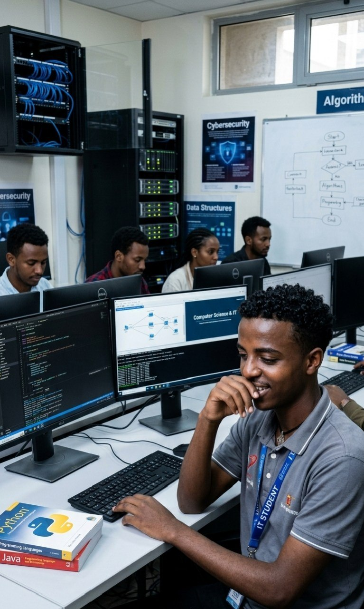
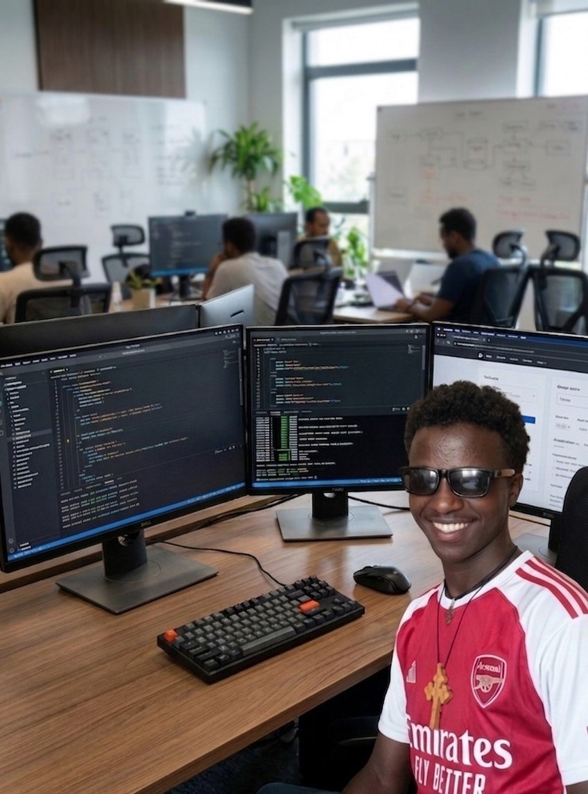

| Name | ID.No | secti0n |
|---|---|---|
| Desalegn Andualem | MTUUR/8882/17 | "A" |
My name is Desalegn Andualem . I am a hardworking Web Developer and a student at Mizan-Tepi University. I love building creative and user-friendly websites using HTML an d CSS. Currently, I live in Mizan Tepi Universty in Tepi Campus.
Learn MoreI am a hardworking and motivated Web Developer currently studying at Mizan-Tepi University. My journey in technology started with an interest for how websites work, which led me to master HTML and CSS. I enjoy solving problems and building applications that make life easier. Beyond coding, I am a dedicated student and a life-long learner, always looking for new challenges to grow my professional skills.

This project demonstrates my proficiency in languages like HTML, CSS, and C++. I focus on writing clean, efficient code to build responsive web interfaces and logical software solutions.

In this project, I explore database management systems using SQL and MariaDB. I work on designing database schemas, managing data relationships, and ensuring efficient data retrieval for applications.